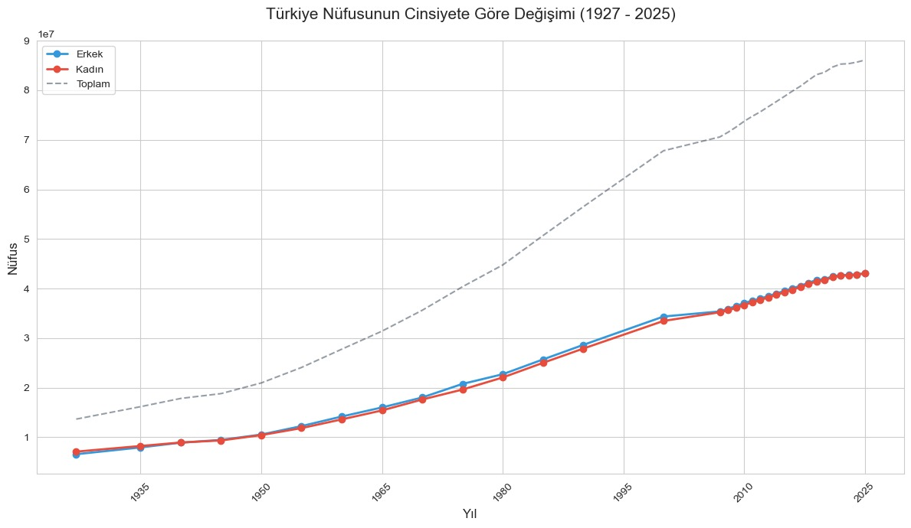
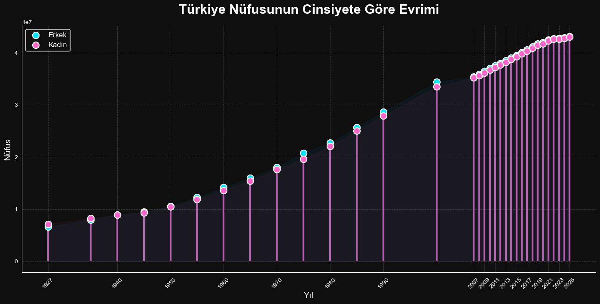
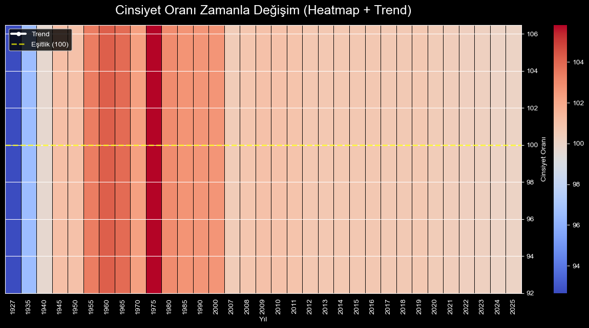
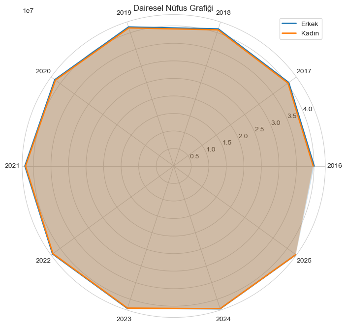
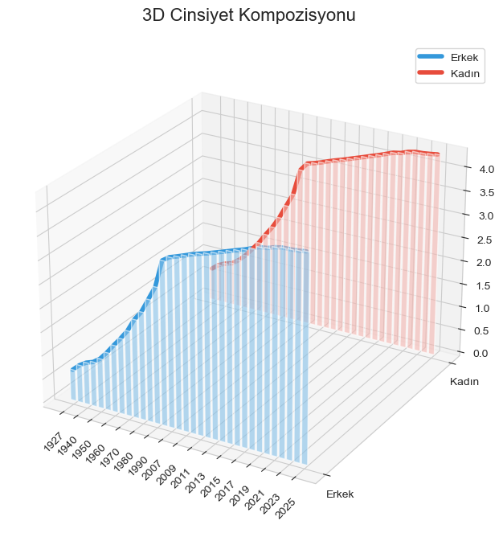

Türkiye Demografik Veri Paneli
TÜİK (Türkiye İstatistik Kurumu) verileri temel alınarak Python ve modern web teknolojileri ile geliştirilmiş interaktif analiz kütüphanesi.

90 Yıllık Trend Analizi
Genel Nüfus Projeksiyonu (1935-2025)

Karşılaştırmalı Analiz
Cinsiyet Dengesi Raporu

İstatistiki Oran
Yıllık Artış Hızı Değişimi

Mekansal Dağılım
Bölgesel Demografi Kırılımı

Tahminleme Modeli